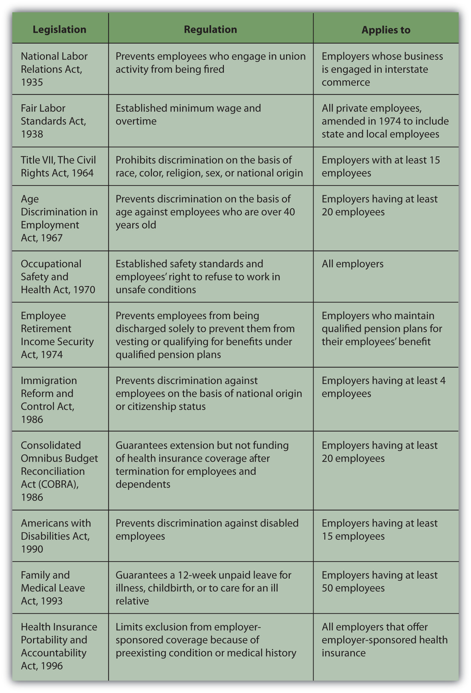

Statistically, it is almost impossible for you to expect to have one job or career for your entire working life. At least once and possibly many times, you will change jobs or even careers. You will have to leave your current or former job and find another. Handling that transition can be difficult, especially if the transition is not what you would have preferred. How you handle that transition may affect your success or satisfaction with your next position.
You may leave your job voluntarily or involuntarily. When you leave voluntarily, presumably you have had a chance to make a reasoned decision and have decided that the net benefits of moving on are more than the net benefits of staying.
You may decide to leave a job and move to another for the following reasons:
In other cases, you may leave employment permanently or temporarily because of the following reasons:
Whatever your motivation for leaving your job, your decision should make sense; that is, it should be based on a reasoned analysis of how it will affect your life. If you have dependents, you will have to consider how your decision may affect their lives too.
Since your job is a source of income, leaving your job means a loss of that income. You need to consider how you can maintain or change your current use of income (i.e., spending and saving levels) with that loss.
If you are changing jobs, your new job will replace that income with new income that is more than, equal to, or less than your old paycheck. If it is equal to or more than your former income, you may maintain or even expand your spending, saving, and investing activities. Extra income will provide you with more choices of how to consume or save. If it is less than your former income, you will have to decrease your spending or saving to fit your current needs. Your budget can help you foresee the effects of your new income on your spending and saving.
If you are leaving employment, then there will be no replacement income, so your spending and saving activities should reflect that loss, unless you have an alternative source of income to replace it. If you are going on to graduate school, perhaps you have a fellowship or scholarship. If you are assuming family care responsibilities, perhaps another family member has offered financial support. If you are retiring, you should have income from invested capital (e.g., your retirement savings) that can be used to replace your wages or salary.
If you are initiating the job change, be sure you try to cause the least disruption and cost to your employer. Let your employer know of your decision as soon as is practical, and certainly before anyone else in the company knows. “Two weeks notice” is the convention, but the more notice you can give, the less inconvenience you may cause. Offer to help train your successor or be available to provide information or assist in the transition. The more cordially you leave your job, the better your relationship with your former employer will be, which may reflect well on you in future networking.
If you participated in a defined contribution retirement plan you own those funds to the extent that you are vested in your employer’s contributions and have contributed your own funds. You can leave those funds as they are invested, or you can transfer them to your new job’s plan and invest them differently. There may be some time limits to doing so, and there may be tax considerations as well, so be sure you consult with your former employer and understand the tax rules before moving any funds.
The decision to leave a job and perhaps to leave employment means leaving nonincome benefits that can create opportunity costs, including
If you have had a negative work experience, leaving may allow you to reduce boredom, eliminate job dissatisfaction, end conflict, avoid unwanted overtime, or reduce stress, but these are reasons for leaving a job that you probably should not share with a new or prospective employer.
Surveys reported in 2005 had this to say about job satisfaction in the United States:Job Satisfaction, http://www.careervision.org/About/PDFs/MR_JobSatisfaction.pdf, http://www.conference-board.org/utilities/pressdetail.cfm?press_id=2582 (accessed July 21, 2009).
According to a 2009 Salary.com survey, only around 15 percent of workers said they were “extremely satisfied” with their jobs. Working retirees and those in the health care and Internet industries were the most satisfied, while workers under thirty and those working in finance-related fields were the least satisfied. At the time of the survey, about 60 percent of workers were looking around for another job, despite most claiming they were generally satisfied with their wages or salaries. Many were worried about being laid off in a down economy.http://www.salary.com/personal/layoutscripts/psnl_articles.asp?tab=psn&cat=cat011&ser=ser032&part=par1352 (accessed August 5, 2009).
As you can see, many micro and macro factors may enter into a decision to leave a job. You spend many of your waking hours working, and deciding to change jobs is about much more than just income. It is still a decision about income, however, so you should carefully weigh the effects of that decision on your personal financial well-being.
If you leave your job involuntarily, you will have to make adjustments for a loss of income that you were not planning to make. That may be difficult, but not so much as you think.
Involuntary job loss may be due to your employer’s decision, an accident or disability, or unexpected circumstances, such as the acquisition, merger, downsizing, or closing of the company you work for. Your employer also may decide to lay you off or fire you. A layoff implies a temporary job loss due to a circumstance in which your employer needs or can afford less labor.
If the layoff is due to an economic recession when there is less demand for the product you create, then it may be affecting your entire industry. That would mean you would have a harder time finding a similar job. If layoffs are widespread enough, however, there may be federal, state, or local government programs aimed at helping the many people in your situation, such as a retraining program or temporary income assistance.
You may get laid off because your employer is no longer as competitive or profitable and so has to cut costs or because the company has lost financing. If the layoffs are specific to your employer, you may be able to find a similar position with another company or you may be able to establish your own competitive business in the same industry.
When you are fired, the employer permanently terminates your employment based on your performance. Involuntary terminationThe ending of an employment relationship; termination may be initiated by the employee (voluntary), the employer (involuntary), or mutually agreed upon by both., or getting fired, will cause a sudden loss of income that usually requires sudden adjustments to spending and saving. You may have to use your accumulated savings to finance your expenditures until that income can be replaced by a new job.
An injury or illness—to you or a dependent—may create a temporary or permanent involuntary job loss. It usually also means a period of unemployment. Depending on the circumstances, your employer may be willing to help ease the transition, perhaps by offering you a more flexible schedule, adjusting your responsibilities, or providing specialized equipment to enable you to do a job.
By law, employers may not discriminate against people with disabilities so long as they are able to do a job. A job accommodationA provision of the Americans with Disabilities Act of 1990 that employers make “reasonable accommodations” for employees with defined disabilities so as not to discriminate against them. is any reasonable adjustment to a job or work environment that makes it possible for an individual with a disability to perform or continue to perform job duties.
If you become disabled and unable to work, you may be able to replace some or all of your wage income with insurance coverage, if you have disability insurance that covers the specific circumstances (as discussed in Chapter 10 "Personal Risk Management: Insurance"). If your disability is permanent, you may qualify for federal assistance through Social Security. If someone else is liable for your disability, in the case of an accident or through negligence, his or her insurance coverage may provide some benefit, or you may have a legal claim that could provide a financial settlement.
If your employer initiates your job change, be sure to discuss his or her obligations to you before you leave. Some employer responsibilities are prescribed by law, as shown in Figure 18.11 "Major U.S. Employment Legislation". Other responsibilities are prescribed by union contract, if applicable, and some are conventions or courtesies that your employer may—or may not—choose to extend.
SeveranceCompensation upon dismissal from employment. is compensation and benefits offered by your employer when you are fired. Your employer is not obligated to offer any severance, but “two weeks pay” is the convention for wages. Your employer is also not required to “pay” for your remaining sick days or vacation days or to extend your benefits, including retirement contributions or life insurance, unless specified in a contract. In most cases, your employer is required under federal law to offer you the opportunity to remain covered under your employee health insurance plan if you assume the cost. This continuation of health coverage is provided by COBRA, the Consolidated Omnibus Budget Reconciliation Act of 1986 (discussed in Chapter 10 "Personal Risk Management: Insurance"). Employers must also provide proof of “insurability,” which enables unemployed workers to purchase private health insurance, if they wish, without having to undergo medical exams.
Federal and state laws govern relationships between employers and employees. A large part of employment law addresses hiring and firing issues as well as working conditions. You should be familiar with the laws that apply where you work (as they differ by state and sometimes by county) so that you understand your responsibilities to your employer and your employer’s obligations to you.
Major federal legislation that addresses these issues is outlined in Figure 18.11 "Major U.S. Employment Legislation".
Figure 18.11 Major U.S. Employment LegislationU.S. Department of Labor, “Summary of the Major Laws of the Department of Labor,” http://www.dol.gov/opa/aboutdol/lawsprog.htm (accessed July 21, 2009).
These laws cover all aspects of employment: hiring, negotiation, working conditions, compensation, benefits, and termination. Workers can sue a company for wrongful dischargeA legal term to describe a termination by the employer that violates the employment contract or the law.—for being fired for any reason barred by an employment law. Employers often seek to protect themselves from suits by requiring terminated employees to sign a form releasing the company from liability.
Companies have ethical standards for dealing with the hiring and firing of employees, but they also may have informal practices for encouraging unwanted employees in good standing to leave. Employment laws cannot protect workers against some unethical practices, but they have clauses that prohibit retaliationActions by an employer to punish an employee who has complained of employer misconduct to authorities. against employees who invoke those laws or enlist government assistance to enforce them. The laws also protect whistleblowersAn employee who alerts authorities to possible employer misconduct. who report employer infractions to government authorities.
The federal government provides unemployment compensation insurance through the Federal-State Unemployment Insurance Program to employees who “lose their jobs through no fault of their own.”U.S. Department of Labor, “Unemployment Insurance,” http://www.dol.gov/dol/topic/unemployment-insurance/index.htm (accessed July 21, 2009). You must meet eligibility requirements to qualify, and the benefits are limited, although they may be extended in certain circumstances. Benefits were extended in February 2009, for example, to as long as seventy weeks in many states, as the number of unemployed workers rose to six million.
Your job and eventually your career will play many roles in your life. It will determine how you spend your time, who you spend your time with, where you live, and how you live. It will probably be a primary determinant of income and therefore of how much you can spend, save, and invest. How you chose to spend, save, and invest is up to you, and your financial decisions can have far-reaching consequences. The more you know and the more you understand, the more you can make decisions that can satisfy your dreams.
You may leave a job involuntarily through a
Involuntary job loss may be compensated with